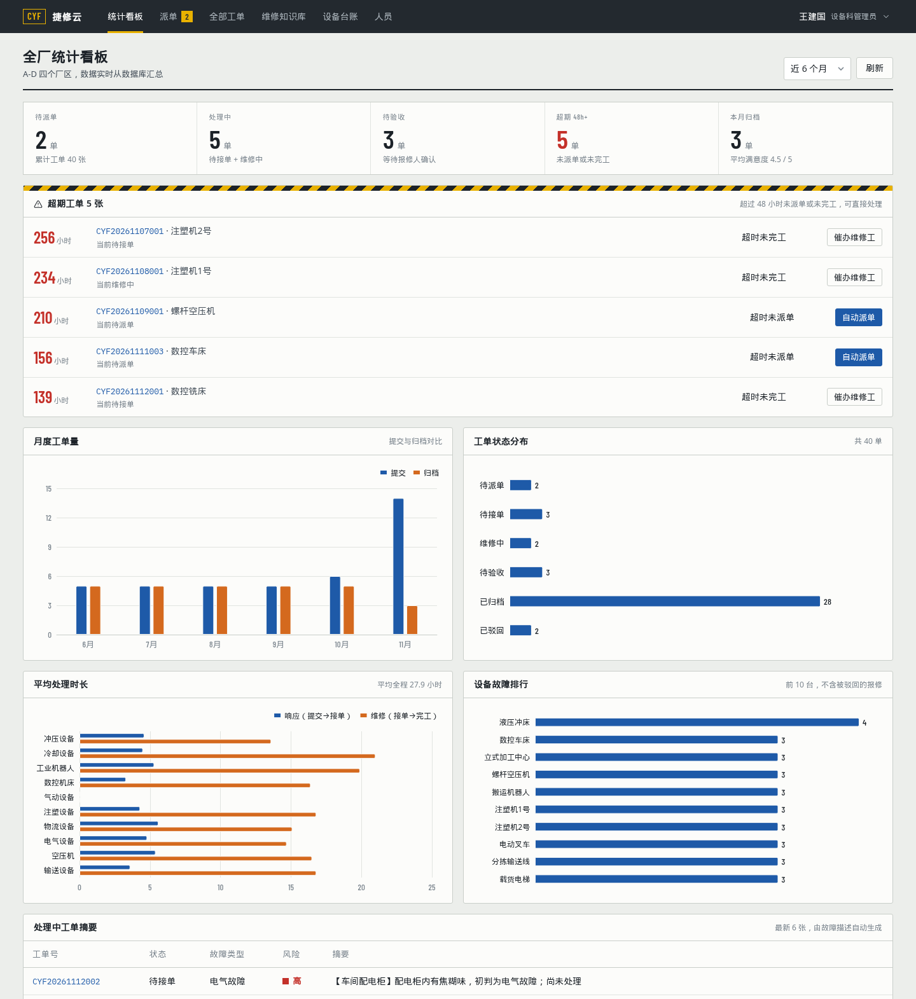
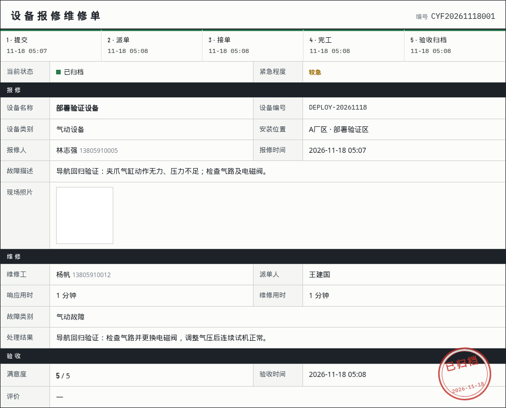

CYF20261118001
气压不足
夹爪气缸动作无力
待派单
验收不通过 → 返回维修中
devicesys_userorder_logrepair_evaluation(status, created_at)状态筛选与时间排序UNIQUE(order_id)同一工单仅一条评价并发派单调用 → 成功流转
MariaDB 11.8 · 独立会话 · 10 轮复验 · 本地修正后结果
词频饱和 · 文档长度归一 k₁ = 1.2 b = 0.75
相对纯规则的 Top-1 提升
24 条自建口语样本 · 6 类故障 · 同库同条件消融
开发集自测；不代表真实车间准确率。
万条合成案例 · 中位耗时比
O(T)O(NQ + H log H)N 案例数 · Q 查询词数 · H 命中数 · T 语料总长度
同语料同查询 · 各 40 次 · ARM64 / Python 3.11 · 仅算法耗时

11 个页面 · 保留前进后退 · 旧请求退出即取消
快照隔离冲突→回滚重取 + 行锁
全厂预警→按工单范围过滤
复用完整工单→独立只读接口
缺少边界→trim + 长度校验
共用数据库→独立测试库
普通链接跳转→路由 + 生命周期清理
问题 → 定位 → 修正 → 验证

报修 → 修复 → 归档 → 知识
权限隔离 · 事务保护 · 流转留痕 · 离线可用